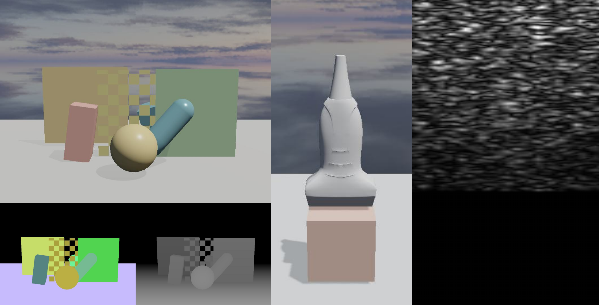

Rendering and Sensors#
After authored state is uploaded and physics is stepped, device-side copies are
dispatched to update entity poses based on the physical state. Visual sensors
can then be produced from the current GPU scene state with
stepVisualSensors(), and computational sensors such as ultrasound are
executed in a separate sensor stage with stepSimulationSensors(). See
Runtime Lifecycle for the staged execution model.
{kind=link}

Example sensor outputs. Left: camera RGB rendering with corresponding segmentation and depth products below. Middle: RGB rendering of the ultrasound probe scene. Right: synthesized ultrasound image.#
Rendering Pipeline#
The renderer uses a forward pipeline. Opaque and cutout meshes are rendered in
the forward opaque pass, followed by transparent meshes in their own forward
pass. Shadow maps, depth products, and segmentation products are generated as
separate passes from the same scene data. A MeshRendererComponent on an
entity binds shared mesh and material resources. Its authored transform supplies
the initial pose; when the entity is simulated, rendering instead uses the
physics-updated GPU pose. Lights and cameras are also components on entities.
After a physics step, the renderer uses the physics-updated GPU pose state for rigid bodies, soft bodies, and strands. Fluids are composited through dedicated depth, filtering, and color passes. The corresponding simulation models are described in Physics and Constraints.
For visual sensing, cameras support three output products: RGB-D, depth-only, and segmentation-with-depth. Cameras can render either to renderer-managed targets for presentation to screen or to explicitly defined render targets. Matched cameras can be rendered in batches into layered array textures spanning multiple environments. GPU-side camera preparation and indirect drawing further reduce the cost.
Meshes, Materials, and Textures#
Obtain the RenderResourceManager
from Runtime::getResources
(or Runtime.resources in Python) to
register reusable meshes, materials, and textures. Configure their descriptor
objects before registering them:
Use StandardLit for regular mesh renderers. SoftBodyLit and CurveLit are
the specialized program families selected for deformable bodies and procedural
strand geometry. A material’s renderMode determines when it is drawn:
Opaque is the default, Cutout enables alpha testing with alphaCutoff, and
Transparent is drawn after opaque geometry. renderOrder orders materials
only within the same render mode.
The pipeline feature flags select normal mapping and double-sided rasterization.
ClearCoat is currently unused by material shading. Cutout automatically enables the alpha-test
feature. Set
castsShadows and receivesShadows independently for every material: a mesh
must cast shadows for it to appear in shadow maps, and must receive them for
the forward lighting pass to apply them.
auto& resources = runtime.getResources();
MeshResourceDesc meshDesc{};
meshDesc.vertices = vertices;
meshDesc.indices = indices;
const auto mesh = resources.registerMesh(meshDesc);
TextureResourceDesc textureDesc{};
textureDesc.width = imageWidth;
textureDesc.height = imageHeight;
textureDesc.pixelFormat = TexturePixelFormat::RGBA8;
textureDesc.colorSpace = TextureColorSpace::Srgb;
textureDesc.mipPolicy = TextureMipPolicy::Disabled;
textureDesc.pixelData = imagePixels;
const auto texture = resources.registerTexture(textureDesc);
MaterialResourceDesc materialDesc{};
materialDesc.baseColor = {0.86f, 0.43f, 0.36f};
materialDesc.roughness = 0.5f;
materialDesc.baseColorTexture = texture;
materialDesc.pipeline.featureFlags = MaterialFeatureFlags::NormalMap;
materialDesc.castsShadows = true;
materialDesc.receivesShadows = true;
const auto material = resources.registerMaterial(materialDesc);
MeshRendererComponent renderer{};
renderer.mesh = mesh;
renderer.material = material;
renderer.segmentationId = 1;
world.setMeshRenderer(entity, renderer);
resources = runtime.resources()
mesh_desc = neo.MeshResourceDesc()
mesh_desc.vertices = vertices
mesh_desc.indices = indices
mesh = resources.register_mesh(mesh_desc)
texture_desc = neo.TextureResourceDesc()
texture_desc.width = image_width
texture_desc.height = image_height
texture_desc.pixel_format = neo.TexturePixelFormat.RGBA8
texture_desc.color_space = neo.TextureColorSpace.Srgb
texture_desc.mip_policy = neo.TextureMipPolicy.Disabled
texture_desc.pixel_data = image_pixels
texture = resources.register_texture(texture_desc)
material_desc = neo.MaterialResourceDesc()
material_desc.base_color = neo.Float3(0.86, 0.43, 0.36)
material_desc.roughness = 0.5
material_desc.base_color_texture = texture
material_desc.pipeline.feature_flags = neo.MaterialFeatureFlags.NormalMap
material_desc.casts_shadows = True
material_desc.receives_shadows = True
material = resources.register_material(material_desc)
renderer = neo.MeshRendererComponent()
renderer.mesh = mesh
renderer.material = material
renderer.segmentation_id = 1
world.set_mesh_renderer(entity, renderer)
Lights and Shadows#
Directional, point, and spot lights are entity components. Point and spot light
positions come from their entity transform. Directional lights use a direction,
color, and intensity; their range field is currently unused. Point lights use
color, intensity, and attenuation range; spot lights additionally use a direction
and inner and outer cone angles.
Shadows require both a shadow-casting light and shadow-casting materials.
castsShadows enables shadow-map generation on every light type. Directional
lights also expose shadowDistance and shadowFadeDistance, which bound the
shadowed region and fade shadows out before its edge. shadowBias offsets depth
comparisons on directional, point, and spot lights; tune it when shadow acne or
detachment is visible. Point and spot lights default to shadows disabled.
C++ |
Python |
|---|---|
DirectionalLightComponent light{};
light.direction = {0.4f, -1.0f, -0.3f};
light.intensity = 3.0f;
light.castsShadows = true;
light.shadowDistance = 40.0f;
light.shadowFadeDistance = 10.0f;
light.shadowBias = 0.0015f;
world.setDirectionalLight(lightEntity, light);
light = neo.DirectionalLightComponent()
light.direction = neo.Float3(0.4, -1.0, -0.3)
light.intensity = 3.0
light.casts_shadows = True
light.shadow_distance = 40.0
light.shadow_fade_distance = 10.0
light.shadow_bias = 0.0015
world.set_directional_light(light_entity, light)
Environment Lighting and Fluids#
Per-environment image-based lighting (IBL) can supply a background cubemap,
diffuse irradiance cubemap, and prefiltered specular cubemap. Configure the
renderer iblQualityTier in RuntimeConfig as Off, DiffuseOnly, or
Full; the latter requires both irradiance and prefiltered-specular maps.
intensity controls lighting from the IBL, while backgroundIntensity
controls its visible background separately.
config.rendererDesc.iblQualityTier = IblQualityTier::Full; // before initialize()
EnvironmentIblDesc ibl{};
ibl.backgroundCubemap = backgroundCubemap;
ibl.irradianceCubemap = irradianceCubemap;
ibl.prefilteredSpecularCubemap = prefilteredSpecularCubemap;
ibl.intensity = 1.0f;
ibl.backgroundIntensity = 0.5f;
world.setEnvironmentIbl(envIndex, ibl);
config.renderer_desc.ibl_quality_tier = neo.IblQualityTier.Full # before initialize()
ibl = neo.EnvironmentIblDesc()
ibl.background_cubemap = background_cubemap
ibl.irradiance_cubemap = irradiance_cubemap
ibl.prefiltered_specular_cubemap = prefiltered_specular_cubemap
ibl.intensity = 1.0
ibl.background_intensity = 0.5
world.set_environment_ibl(env_index, ibl)
Fluid appearance is configured per environment with smoothness, specular and Fresnel response, depth-edge and smoothing filters, and optional background refraction. Its refraction index and view-thickness settings determine the refraction approximation.
EnvironmentFluidDesc fluidAppearance{};
fluidAppearance.smoothness = 0.92f;
fluidAppearance.specular = {0.35f, 0.40f, 0.45f};
fluidAppearance.fresnel = 0.8f;
fluidAppearance.filterRadiusPixels = 6.0f;
fluidAppearance.enableBackgroundRefraction = true;
fluidAppearance.refractionIor = 1.33f;
world.setEnvironmentFluid(envIndex, fluidAppearance);
fluid_appearance = neo.EnvironmentFluidDesc()
fluid_appearance.smoothness = 0.92
fluid_appearance.specular = neo.Float3(0.35, 0.40, 0.45)
fluid_appearance.fresnel = 0.8
fluid_appearance.filter_radius_pixels = 6.0
fluid_appearance.enable_background_refraction = True
fluid_appearance.refraction_ior = 1.33
world.set_environment_fluid(env_index, fluid_appearance)
Cameras and Render Targets#
A camera entity uses its transform as the view pose and a CameraComponent for
projection, output product, clear settings, and output binding. The component
defines verticalFovDegrees, nearClip, farClip, a normalized viewport,
and renderOrder. Cameras sharing an output render in ascending renderOrder.
CameraComponent::Product (CameraProduct in Python) selects the sensor
product: ColorDepth produces standard RGBA color and depth, Depth produces
a depth map, and SegmentationDepth produces a semantic segmentation mask and
depth. backgroundMode selects ClearColor or EnvironmentCubemap; color and
depth clearing can be controlled independently.
An explicit render target is useful for off-screen sensing and learning. Its
array size can match the environment count; with layered rendering enabled,
each camera writes to its own target layer. Targets may have color and/or depth
attachments, with chosen color and depth formats. Set shaderReadable when a
later graphics or compute pass will sample the target, and unorderedAccess
when a compute pass needs unordered writes.
C++ |
Python |
|---|---|
GpuRenderTargetDesc targetDesc{};
targetDesc.width = 640;
targetDesc.height = 480;
targetDesc.arraySize = environmentCount;
targetDesc.layeredRendering = true;
targetDesc.shaderReadable = true;
const auto target = runtime.getGpuDevice()->renderTargetSystem().createRenderTarget(targetDesc);
CameraComponent camera{};
camera.product = CameraComponent::Product::ColorDepth;
camera.output.mode = RenderOutputMode::ExplicitSurface;
camera.output.binding.target = target;
camera.output.binding.firstLayer = envIndex;
camera.output.binding.layerCount = 1;
camera.outputWidth = targetDesc.width;
camera.outputHeight = targetDesc.height;
camera.backgroundMode = CameraComponent::BackgroundMode::EnvironmentCubemap;
world.setCamera(cameraEntity, camera);
target_desc = neo.GpuRenderTargetDesc()
target_desc.width = 640
target_desc.height = 480
target_desc.array_size = environment_count
target_desc.layered_rendering = True
target_desc.shader_readable = True
target = runtime.create_render_target(target_desc)
camera = neo.CameraComponent()
camera.product = neo.CameraProduct.ColorDepth
camera.output.mode = neo.RenderOutputMode.ExplicitSurface
camera.output.binding = neo.GpuRenderTargetBinding()
camera.output.binding.target = target
camera.output.binding.first_layer = env_index
camera.output.binding.layer_count = 1
camera.output_width = target_desc.width
camera.output_height = target_desc.height
camera.background_mode = neo.CameraBackgroundMode.EnvironmentCubemap
world.set_camera(camera_entity, camera)
Ultrasound Sensors#
Ultrasound image synthesis using the COLE algorithm is provided through the
optional CUDA extension, CRESSim-Ultrasound. A
UltrasoundScattererSourceComponent on a SoftBodyComponent tissue entity
defines the scatterer density or spacing. The source also requires one
amplitude range for each authored soft-body particle. Those scatterers follow
the tissue’s simulated particles. An UltrasoundProbeComponent defines the
transducer and acoustic model; an UltrasoundRendererComponent on the same
probe entity defines the B-mode output and normalization.
Note
Ultrasound may not be available in certain builds. At build time, enable
CRESSIM_NEO_ENABLE_ULTRASOUND=ON; it requires CUDA interoperability and a
working CUDA compiler. Check Runtime::getInfo().ultrasoundSupported or
Runtime.get_info().ultrasound_supported before using the feature.
See Build CRESSim-Neo for the build configuration.
UltrasoundProbeComponent::Geometry (UltrasoundProbeGeometry in Python)
selects a linear or curvilinear probe. Its scanline count, line length, and
spacing define the sampling layout; curvilinear probes additionally use a
sector angle and probe radius. The acoustic parameters include sound speed,
world-unit scale, frequencies, bandwidth, beam widths, noise, radial
decimation, arc projection, and phase-delay beamforming.
UltrasoundScattererSourceComponent scatterers{};
scatterers.density = 1'000'000.0f;
world.setUltrasoundScattererSource(tissueEntity, scatterers);
const auto particles = world.tryGetSoftBodyAuthoringParticles(tissueEntity);
if (!particles.has_value())
{
throw std::runtime_error("Tissue must have a SoftBodyComponent.");
}
std::vector<UltrasoundAmplitudeRange> amplitudes(
particles->particleCount, UltrasoundAmplitudeRange{0.2f, 0.8f});
world.setUltrasoundScattererAmplitudeRanges(tissueEntity, amplitudes);
UltrasoundProbeComponent probe{};
probe.geometry = UltrasoundProbeComponent::Geometry::Linear;
probe.numScanlines = 50;
probe.lineLength = 0.8f;
probe.scanlineSpacing = 0.01f;
probe.worldUnitsPerMeter = 10.0f;
UltrasoundRendererComponent ultrasoundOutput{};
ultrasoundOutput.outputWidth = 512;
ultrasoundOutput.outputHeight = 512;
ultrasoundOutput.useFixedMaxNormalization = false;
world.setUltrasoundProbe(probeEntity, probe);
world.setUltrasoundRenderer(probeEntity, ultrasoundOutput);
scatterers = neo.UltrasoundScattererSourceComponent()
scatterers.density = 1_000_000.0
world.set_ultrasound_scatterer_source(tissue_entity, scatterers)
particles = world.try_get_soft_body_authoring_particles(tissue_entity)
if particles is None:
raise RuntimeError("Tissue must have a SoftBodyComponent")
amplitudes = [neo.UltrasoundAmplitudeRange(0.2, 0.8)
for _ in particles.rest_positions]
world.set_ultrasound_scatterer_amplitude_ranges(tissue_entity, amplitudes)
probe = neo.UltrasoundProbeComponent()
probe.geometry = neo.UltrasoundProbeGeometry.Linear
probe.num_scanlines = 50
probe.line_length = 0.8
probe.scanline_spacing = 0.01
probe.world_units_per_meter = 10.0
ultrasound_output = neo.UltrasoundRendererComponent()
ultrasound_output.output_width = 512
ultrasound_output.output_height = 512
ultrasound_output.use_fixed_max_normalization = False
world.set_ultrasound_probe(probe_entity, probe)
world.set_ultrasound_renderer(probe_entity, ultrasound_output)
Output Consumption#
Camera and ultrasound outputs remain on GPU render targets. A camera exposes
its binding through CameraComponent::output. prepare() creates or refreshes
an ultrasound output and publishes UltrasoundProbeResult::imageBinding,
imageWidth, and imageHeight with prepared == true. Queue a host readback
from that binding before the capture frame. Complete the frame with
endFrame() before retrieving the readback. After uploadWorld(), physics,
and stepSimulationSensors(), check completed; completedFrameIndex
identifies the frame that produced the image.
Shader-readable targets can be sampled by subsequent graphics or custom compute passes. Request render-target readback only when host data are required; for GPU-resident task computation and learning, retain the target on GPU. Shared buffers and CUDA/DLPack exchange are described in Custom GPU Compute and Interoperability.
runtime.prepare();
const auto* result = world.tryGetUltrasoundProbeResult(probeEntity);
if (result == nullptr || !result->prepared)
{
throw std::runtime_error("Ultrasound output is unavailable after prepare().");
}
const std::uint32_t imageWidth = result->imageWidth;
const std::uint32_t imageHeight = result->imageHeight;
const auto request = runtime.getGpuDevice()->renderTargetSystem()
.requestRenderTargetReadback(result->imageBinding);
runtime.uploadWorld();
runtime.stepPhysics(frame);
runtime.stepSimulationSensors(frame);
runtime.stepVisualSensors(frame);
runtime.endFrame(frame);
result = world.tryGetUltrasoundProbeResult(probeEntity);
if (result != nullptr && result->completed)
{
GpuRenderTargetReadbackEvent event{};
const bool ready = runtime.getGpuDevice()->renderTargetSystem()
.tryGetRenderTargetReadback(request, event);
}
runtime.prepare()
result = world.try_get_ultrasound_probe_result(probe_entity)
if result is None or not result.prepared:
raise RuntimeError("Ultrasound output is unavailable after prepare()")
image_width, image_height = result.image_width, result.image_height
request = runtime.request_render_target_readback(result.image_binding)
runtime.upload_world()
runtime.step_physics(frame)
runtime.step_simulation_sensors(frame)
runtime.step_visual_sensors(frame)
runtime.end_frame(frame)
result = world.try_get_ultrasound_probe_result(probe_entity)
if result is not None and result.completed:
event = runtime.try_get_render_target_readback(request)